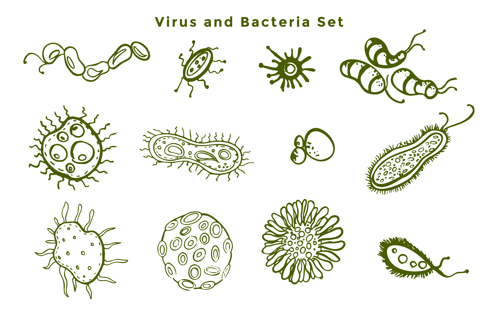

Los microorganismos están presentes en prácticamente todos los ambientes de la Tierra: en el suelo, el agua, el aire, e incluso en y dentro del cuerpo humano. Cumplen una amplia variedad de funciones en los ecosistemas y pueden ser beneficiosos, neutrales o perjudiciales para los seres humanos y otros organismos.

Algunos microorganismos son esenciales para la vida en la Tierra. Por ejemplo, las bacterias descomponedoras ayudan a reciclar la materia orgánica y liberar nutrientes al suelo, permitiendo el crecimiento de plantas. Además, hay bacterias que viven en el tracto digestivo de los animales y los humanos, donde ayudan en la digestión y la síntesis de vitaminas.
Sin embargo, también existen microorganismos patógenos que pueden causar enfermedades en los seres humanos, como ciertas bacterias, virus y hongos. Algunos ejemplos conocidos son la bacteria Escherichia coli, responsable de infecciones gastrointestinales, el virus de la gripe, que causa la gripe estacional, y el hongo Candida albicans, que puede causar infecciones por hongos en la piel y las mucosas.

La microbiología es la rama de la ciencia que estudia los microorganismos, su estructura, función, clasificación, interacciones y su papel en la salud y la enfermedad. Los avances en microbiología han sido fundamentales para comprender mejor los microorganismos, desarrollar antibióticos y vacunas, y mejorar la salud pública en general.